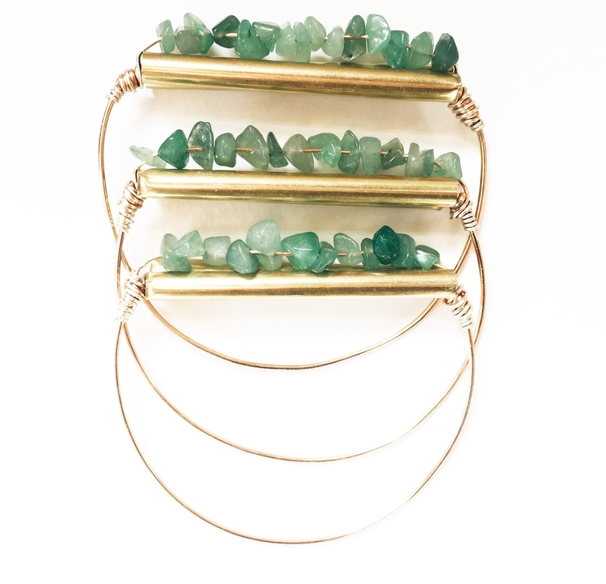
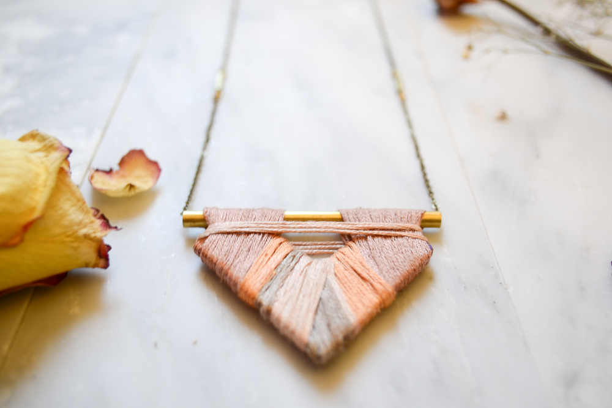

INARU
INARU (pronounced e-na-ru) is what happens when art, jewelry and spirit and nature collide. Jecilia Negron, the artist and mastermind behind the jewelry line decided to adorn bodies with art rather than on the canvases she was used to working with. Negron, who comes from a family of artists and musicians, is a painter and photographer, and recently launched her debut jewelry line, INARU, inspired by natural elements, vintage statement pieces and the strength of women, this past March.
Negron does most of the work herself, from designing, to photographing, and branding and marketing her pieces. Each piece is a handmade, one of a kind vibrant piece of jewelry, whether it be hand painted or wrapped in thread, a symmetrical necklace evokes the elements of nature with wooden shapes that appear leaf-like, a pair of earrings with tri-colored wooden shades contrast against one another, and a gold cuff with jade colored beads lines the wrist like precious pebbles. With hard work, dedication, cultural pride, and art with intention, INARU is beautiful and powerful, just like the designer behind the pieces.
amfm: How long has INARU been a brainchild for you and why was launching your own jewelry line something that you wanted to do?
INARU: Jewelry is something that can enlighten my whole mood and the way I feel throughout the day. I remember always being so excited when finding unique and funky earrings or dope rings. Realizing the feeling it brought me, I figured why not create my own? My senior year in high school I started to paint and photo collage onto light-weighted wood rectangles and then turned those into earrings. They were vibrant, full of pattern, and definitely statement makers from how large they were! That was really the starting point of making jewelry. INARU was a turning point for me. It’s when I started to be conscious of branding and running an actual online business. The INARU jewelry line released March of 2016. I started really getting into brand identity and design, which is still growing with INARU. All of the designing, website managing, photography, and running is all done by myself! Which at times can be a lot of work, but in the end it’s all rewarding.
amfm: A lot of your pieces seem to be of the earth and alluding to nature. What is your inspiration behind the pieces? What about nature inspires you and what is your process like?
INARU: What I wanted for INARU was to become something that can be deeper than just being a pair of earrings. I wanted there to be a spiritual, intimate, and empowering feeling when someone wears them. My designs are inspired by momma earth because she gives me those exact feelings. The delicacy of nature and it’s details flow within my work and even when I’m photographing pieces. These elements are what supports my designs and the purpose of INARU. When I’m creating a design or producing a piece, I love to problem solve and sometimes just go with the flow. A lot of pieces are made from unique pieces that I find at antique shops or from old jewelry. I enjoy the one of a kind pieces because that’s really when I get creative! It’s not like when I’m producing a design over and over again. Overall, I love to keep things different and expand. I eventually want to learn metalsmithing and the designs are cultivated to honor the dopeness and fuerza (strength) that we hold. It’s made to empower and enlighten.
amfm: You are also an artist first and foremost, how does your art (painting, drawing, photography) influence your jewelry making and will the two collide more in the future?
INARU: When I paint women I sometimes paint my earring designs on them and it’s interesting to see how the earrings in the paintings can come to life through jewelry making. I enjoy having all of my work flow within each other. I plan to put more of my painting/drawing by hand in some designs. I’m currently working on clay necklaces and plan to paint those!
amfm: With your line having just launched, what do you aspire for INARU? What's next for you and the line?INARU: I’m looking and applying to vend at markets and events this year so I can share the line locally! I’m also currently searching for fixtures and furniture to create mini pop up shops! l’m really interested in visual display and how you can create a dope environment that creates a mood for the customers! Eventually my dream is to open up a boutique. The space would be utilized as a store and also as a community space. I hope to bring artists into teach workshops, have a gallery space, and foster emerging entrepreneurs and makers like myself!
amfm: Describe what INARU means to you.
INARU: The word INARU derives from the native taíno word for “spirit of a wombyn.” My jewelry is something that honors style, individuality, and creativity.
|  |  |
For more from INARU:
http://www.inarushop.com
Instagram
photo credits: INARU